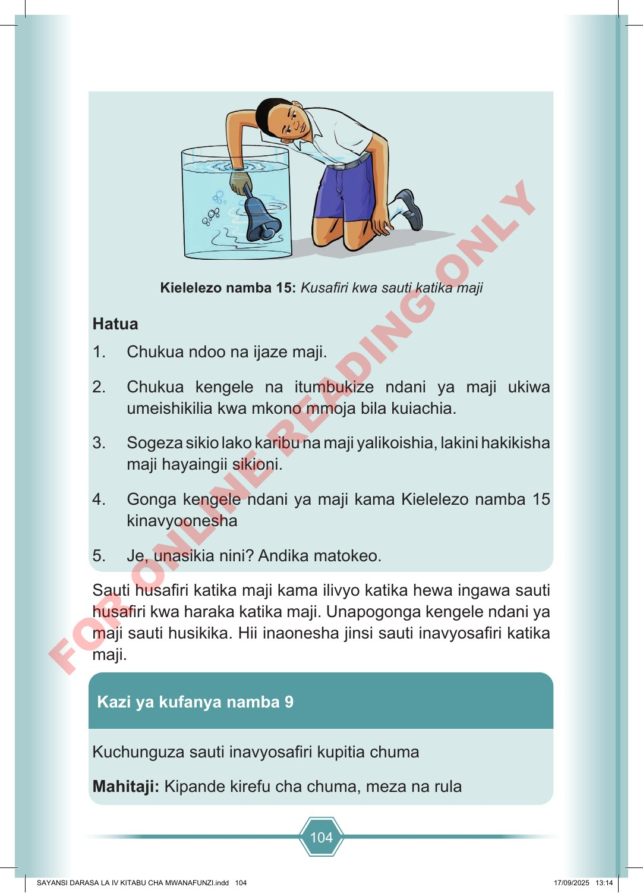

104 Kielelezo namba 15: Kusafiri kwa sauti katika maji Hatua 1. Chukua ndoo na ijaze maji. 2. Chukua kengele na itumbukize ndani ya maji ukiwa umeishikilia kwa mkono mmoja bila kuiachia. 3. Sogeza sikio lako karibu na maji yalikoishia, lakini hakikisha maji hayaingii sikioni. 4. Gonga kengele ndani ya maji kama Kielelezo namba 15 kinavyoonesha 5. Je, unasikia nini? Andika matokeo. Sauti husafiri katika maji kama ilivyo katika hewa ingawa sauti husafiri kwa haraka katika maji. Unapogonga kengele ndani ya maji sauti husikika. Hii inaonesha jinsi sauti inavyosafiri katika maji. Kazi ya kufanya namba 9 Kuchunguza sauti inavyosafiri kupitia chuma Mahitaji: Kipande kirefu cha chuma, meza na rula SAYANSI DARASA LA IV KITABU CHA MWANAFUNZI.indd 104 SAYANSI DARASA LA IV KITABU CHA MWANAFUNZI.indd 104 17/09/2025 13:14 17/09/2025 13:14 F O R O N L I N E R E A D I N G O N L Y